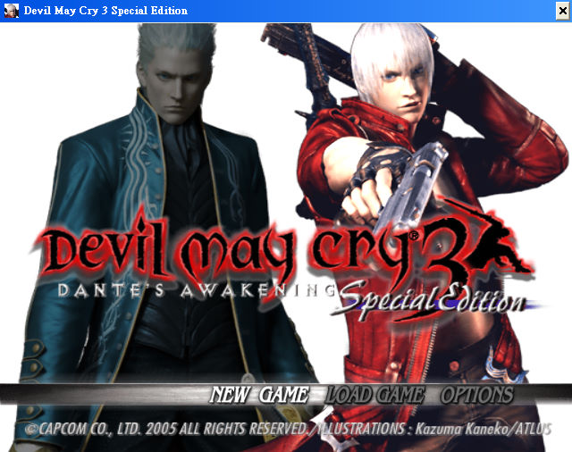
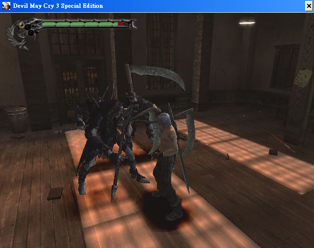

名稱：惡魔獵人3／鬼泣3 (Devil May Cry 3: Dante's Awakening，中文／英文版)
簡介：CAPCOM 2005年出品的動作清版遊戲，2006年移植至Windows，推出「特別版（Special
Edition）」，2018年經由Steam推出一到三代HD版合輯版（HD Collection） [待補]。


保護：英文特別版為光碟SecuROM 7.24+序號（du67120631111226）
繁中特別版為光碟SecuROM 7.28+序號（DH62120661135489）
備註：Steam HD版請參閱一代。
備註：非安裝移機者，繁中版需設定下列Registry，否則會變英文版：
[HKEY_LOCAL_MACHINE\SOFTWARE\CAPCOM\Devil May Cry 3 Special Edition]
[HKEY_LOCAL_MACHINE\SOFTWARE\WOW6432Node\CAPCOM\Devil May Cry 3 Special Edition]
"Language"=dword:00000008
"Subtitles"=dword:00000008
檔案：dmc3se_v1.3.0_update.rar = 日文1.3.0更新檔（已免光碟，繁中可用）
nocd.rar = 免光碟檔（只能在XP系統上執行，會被報毒，請自行斟酌）
操作：遊戲不支援滑鼠，請使用鍵盤操控（可到GAME OPTIONS裡設定）。
AD = 左右移動
WS = 上下移動
L = 前衝／確認
K = 跳躍／取消
I = 射擊
J = 近距攻擊
Q = 變更槍枝
E = 變更武器
Space = 鎖定敵人
O = 變更鎖定目標
N = 變身惡魔
M = 向敵人挑釁
1 = 道具欄
2 = 檔案功能
3 = 裝備欄
4 = 地圖
P = 使用內定視角